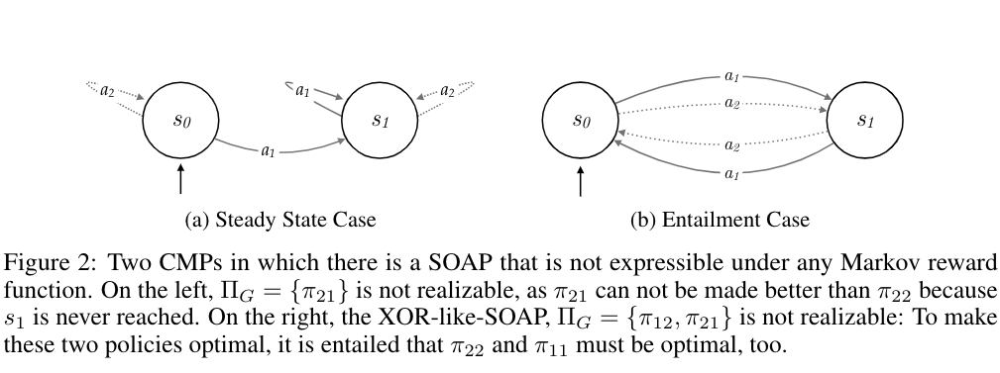
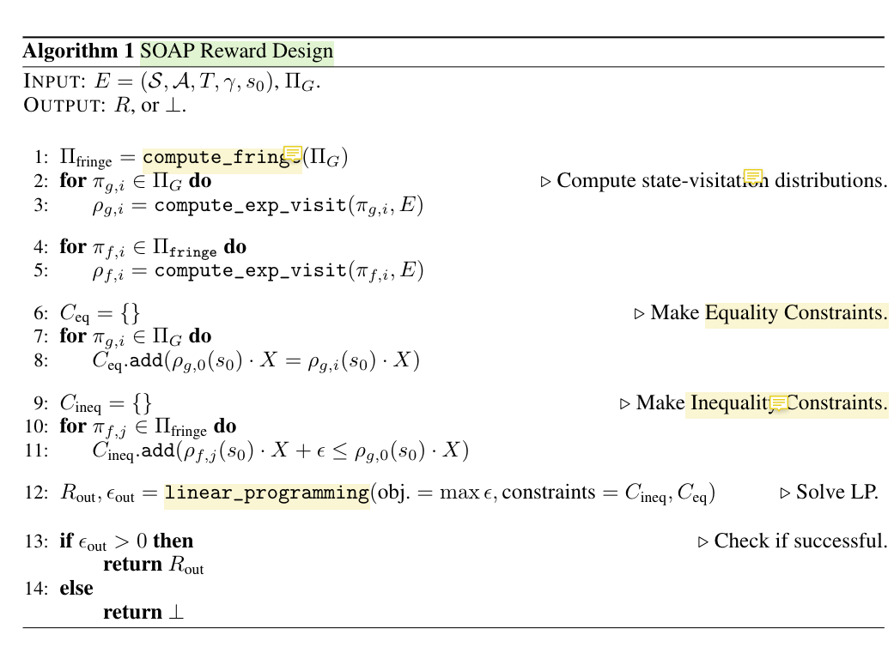
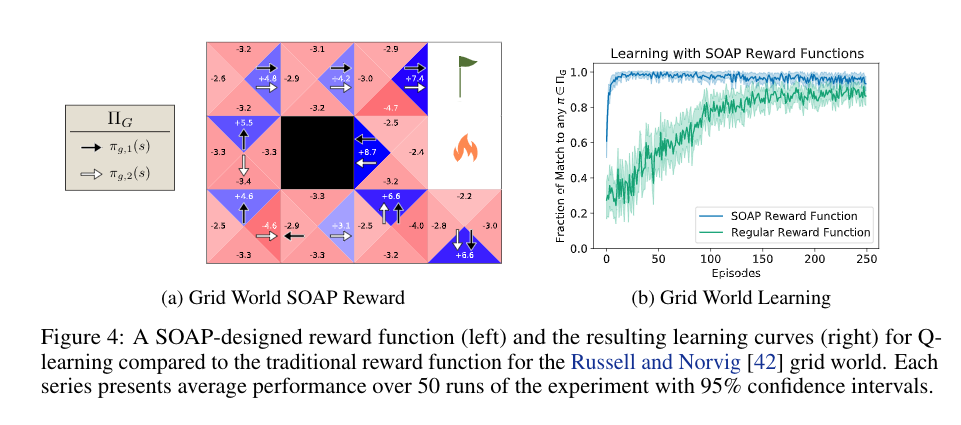
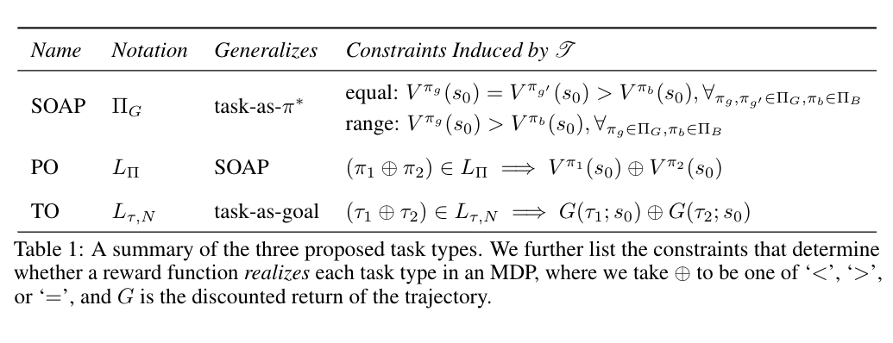

[TOC]
- Title: On the Expressivity of Markov Reward
- Author: David Abel et. al.
- Publish Year: NuerIPS 2021
- Review Date: 6 Dec 2021
Summary of paper
This needs to be only 1-3 sentences, but it demonstrates that you understand the paper and, moreover, can summarize it more concisely than the author in his abstract.
The author found out that in the Markov Decision Process scenario, (i.e., we do not look at the history of the trajectory to provide rewards), some tasks cannot be realised perfectly by reward functions. i.e.,
there exists instances of tasks that no Markov reward function can capture.
Assumption:
- when we think of a task, we are able to find its associated acceptable/prefered policies/behaviours
- i.e., A task convey general preference over behaviour or outcome.
So, the author found that
Theorem 4.1. For each of SOAP, PO, and TO, there exists (Env, Task) pairs for which no Markov reward function realize Task in Environment – author
example of inexpressible reward,

given the environment and we design a task such that ${\pi_{12}, \pi_{21}}$ are desired policies (i.e., The XOR like issue, in S0 we prefer any acitions and in S1 we prefer the opposite action, It means that the prefered action for the second step depends on the choice of the first step, history matters!).
Prefered Policy (dependent on the task) realisation of a reward function, according to the author, means that the value V value of the starting state of the prefered policy must be greater than the V value of the starting state from other ‘bad’ policy when using this reward function. (it means that only the prefered policy leads to maximum accumulative reward)
Then in Entailment Case, we cannot define a reward function such that the Value of starting state of the prefered policy is greater than others like $\pi_{11}$ (easy to prove)
reward function design
The author also proposed a reward function design algorithm that can determine whether an appropriate reward function can be constructed, so that the reward function can realise the prefered policy of the task.

fringe policies: the policies that are just differ from the good policies with just one action.
the algoritm ensures that non-optimal policies will always have lower value of its starting state than the prefered policies
$X$ is the variable for the Value of the state
discovery
for this famous grid world task

the author found that the traditional reward function -> +1 for reach goal, -1 for reach fire, does not induce a perfect match in policy. (see the figure)
It shows the usefulness of that reward design algorithm.
Also, the experiments shows that, the hyperparameter of the environment will strongly affect the expressivity of the previous good reward function designed by their algorithm.
Some key terms
Markov reward function
Markov reward functions can represent immediate worth in an intuitive manner that also allows for reasoning about combinations, sequences, or reoccurrences of such states of affairs.
expressing a task
treat a reward function as accuratelyexpressinga task just when the valuefunction it induces in an environment adheres to the constraints of a given task
roles of reward
can both define the task the agent learns to solve, and define the “bread crumbs” that allow agents to efficiently learn to solve the task.
**reward in terms of expressivity **
reward is treated as an expressive language for incentivizing reward-maximizing agents
Task definition
Indeed, characterizing a task in terms of choice of $\pi$ or goal fails to capture these distinctions. Our view is that a suitably rich account of task should allowfor the characterization of this sort of preference, offering the flexibility to scale from specifying onlythe desirable behavior (or outcomes) to an arbitrary ordering over behaviors (or outcomes).
this leads to for a task, there should be associated set of prefered policies or behaviours.
SOAPs
Set Of Acceptable Policies, a task will have its own set of prefered policies, and a desired reward function will maximise the reward accumulation only when using the prefered policies
POs
generalise the SOAP, Partial Ordering on policies,
for example, instead of just the good poilcies, the task is also characterised by some bad policies that must be avoided.
TOs
This means we characterise the task by defining prefered/bad trajectories

Good things about the paper (one paragraph)
This is not always necessary, especially when the review is generally favorable. However, it is strongly recommended if the review is critical. Such introductions are good psychology if you want the author to drastically revise the paper.
A really interesting paper about RL reward and reward designing.
The research on the expressivity of reward would help to decide whether we should use RL methods on certain tasks.
Major comments
Discuss the author’s assumptions, technical approach, analysis, results, conclusions, reference, etc. Be constructive, if possible, by suggesting improvements.
It looks like the issue mentioned in the paper can just be easily alleviated by introducing history information to the reward function.
Minor comments
This section contains comments on style, figures, grammar, etc. If any of these are especially poor and detract from the overall presentation, then they might escalate to the ‘major comments’ section. It is acceptable to write these comments in list (or bullet) form.
Markov Decision Process intro video
Incomprehension
List what you don’t understand.
Given the assumption: “all task should have their associated set of prefered policies or bad policies”, and in SOAPs condition,
the author claim that the expressivity of reward function is just about if the reward function can realise all the prefered policies in the set. But why do we require just one reward function to satisfy all of the prefered policies?
Eventually an agent would just pick one policy to use.